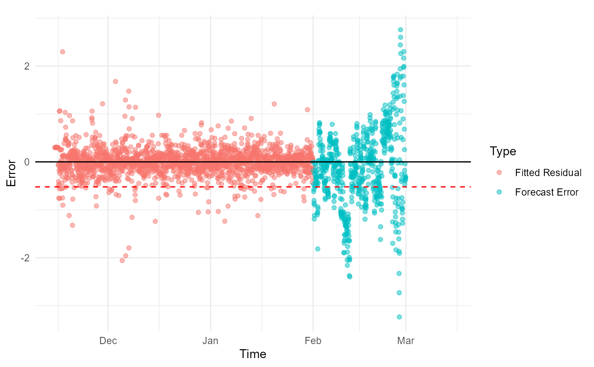
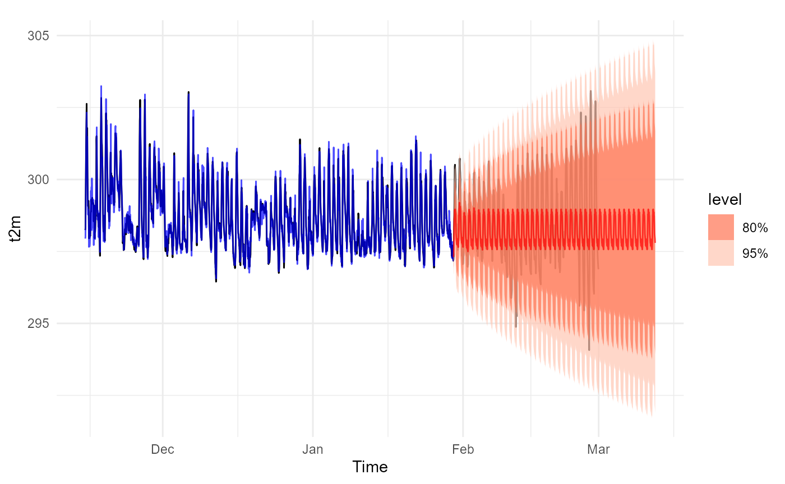

Blast Detection Framework
BlastDetection.Rmd
library(riceblast)
library(ceylon)
library(tidyverse)
library(sf)
library(fable)
library(feasts)
library(tsibble)
library(evd)
library(lubridate)
#library(POT)
library(rlang)This vignette presents a step-by-step weather-based framework for detecting rice blast disease using historical climate records and blast observations from Field 1 in Kilinochchi, Sri Lanka (9.385680° N, 80.538083° E).
Visualize data
# assuming your data frame is named df
# Gather all continuous variables into long format
df_long <- field1 |>
pivot_longer(
cols = c(d2m, t2m, stl1, u10, v10, tp, RH),
names_to = "variable",
values_to = "value"
)
# Create the plot
ggplot(df_long, aes(x = time, y = value, color = type)) +
geom_point(alpha = 0.6) +
geom_vline(aes(xintercept = as.POSIXct("2021-02-12 00:00:00", tz = "UTC")),
color = "red", linetype = "dashed") +
geom_vline(aes(xintercept = as.POSIXct("2021-02-12 00:00:00", tz = "UTC") -
(14 * 24 * 60 * 60)), color = "blue", linetype = "dashed") +
geom_vline(aes(xintercept = as.POSIXct("2020-11-15 00:00:00", tz = "UTC")),
color = "darkgreen", linetype = "dashed") +
facet_wrap(~variable, scales = "free_y", ncol = 1) +
theme_minimal() +
labs(
title = "Meteorological Variables Over Time",
x = "Time",
y = "Value",
color = "Type"
) +
theme(
strip.text = element_text(face = "bold"),
plot.title = element_text(hjust = 0.5),
legend.position = "bottom"
)
We consider the two-and-a-half-month period following the planting date as the plant’s typical behaviour window. Previous observations indicate that disease symptoms do not appear within this period. During this window, both the air temperature at 2 meters above ground (t2m) and the top-layer soil temperature (stl1) remain relatively stable. This stability provides an ideal baseline for modelling typical plant behaviour, and we therefore adopt this model to represent the plant’s typical state.
Air temperature 2 meters above ground
# Create the plot of Air temperature 2 meters above ground.
field1 |>
ggplot(aes(x = time, y = t2m)) +
geom_line() +
geom_point(alpha = 0.6) +
geom_vline(aes(xintercept = as.POSIXct("2021-02-12 00:00:00", tz = "UTC")),
color = "red", linetype = "dashed") +
geom_vline(aes(xintercept = as.POSIXct("2021-02-12 00:00:00", tz = "UTC") -
(14 * 24 * 60 * 60)), color = "blue", linetype = "dashed") +
geom_vline(aes(xintercept = as.POSIXct("2020-11-15 00:00:00", tz = "UTC")),
color = "darkgreen", linetype = "dashed") +
theme_minimal() +
labs(
title = "Air temperature 2 meters above ground",
x = "Time",
y = "Value",
color = "Type"
) +
theme(
strip.text = element_text(face = "bold"),
plot.title = element_text(hjust = 0.5),
legend.position = "bottom"
)
Temperature of the top soil layer.
# Create the plot of Air temperature 2 meters above ground.
field1 |>
ggplot(aes(x = time, y = stl1)) +
geom_line() +
geom_point(alpha = 0.6) +
geom_vline(aes(xintercept = as.POSIXct("2021-02-12 00:00:00", tz = "UTC")),
color = "red", linetype = "dashed") +
geom_vline(aes(xintercept = as.POSIXct("2021-02-12 00:00:00", tz = "UTC") -
(14 * 24 * 60 * 60)), color = "blue", linetype = "dashed") +
geom_vline(aes(xintercept = as.POSIXct("2020-11-15 00:00:00", tz = "UTC")),
color = "darkgreen", linetype = "dashed") +
theme_minimal() +
labs(
title = "Soil temperature level 1",
x = "Time",
y = "Value",
color = "Type"
) +
theme(
strip.text = element_text(face = "bold"),
plot.title = element_text(hjust = 0.5),
legend.position = "bottom"
)
Modelling the typical behaviour
typical_f1 <- field1 |>
filter(
time >= as.POSIXct("2020-11-15 00:00:00", tz = "UTC"),
time <= as.POSIXct("2020-11-15 00:00:00", tz = "UTC") + months(2) + days(15)
) |>
select(time, t2m) |>
tsibble::as_tsibble(index = time)
typical_f1 |> autoplot(t2m) 
typical_f1 |>
ggtime::gg_tsdisplay(t2m, plot_type='partial')
typical_f1 |>
mutate(diff = difference(t2m, 24)) |>
ggtime::gg_tsdisplay(diff, plot_type = 'partial')
test_f1 <- field1 |>
dplyr::filter( time > as.POSIXct("2021-01-30 00:00:00", tz = "UTC") ) |>
dplyr::select(time, t2m) |>
tsibble::as_tsibble(index = time)
# Step 1: Fit model and compute lower extreme threshold
analysis_result <- riceblast::model_extremes(
typical_data = typical_f1,
time_col = time,
response = t2m,
t_method = "evd"
)
# Step 2: Forecast + test against full data
test_result <- riceblast::test_extremes(analysis_result, test_data = test_f1, h = 1000)
# Step 3: Visualize everything
plots <- plot_extreme_analysis(test_result)
plots$main_plot
plots$error_plot +
geom_vline(aes(xintercept = as.POSIXct("2021-02-12 00:00:00", tz = "UTC")),
color = "red", linetype = "dashed")
# Step 1: Fit model and compute lower extreme threshold
analysis_result <- riceblast::model_extremes(
typical_data = typical_f1,
time_col = time,
response = t2m,
t_method = "boxplot"
)
# Step 2: Forecast + test against full data
test_result <- riceblast::test_extremes(analysis_result, test_data = test_f1, h = 1000)
# Step 3: Visualize everything
plots <- plot_extreme_analysis(test_result)
plots$main_plot
plots$error_plot
analysis_result$lower_limit
#> 25%
#> -0.498965